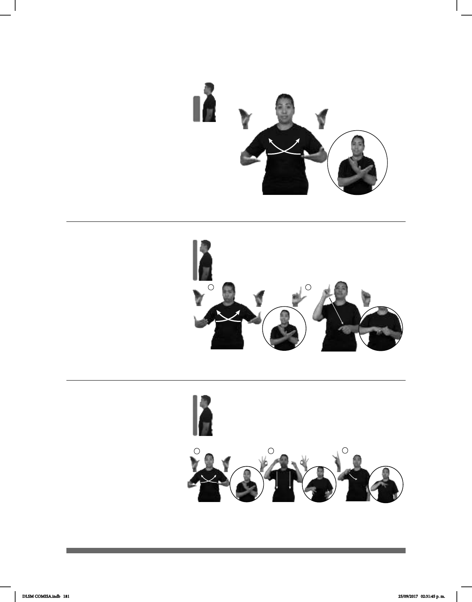

181
Seña: SS
B-P.8
Palmas hacia arriba.
A la altura del pecho de
los lados al centro.
Las manos cruzan
hacia el centro y llegan a un punto
cercano.
1. v. intr. Salir un
nuevo ser del seno de su madre. 2.
sust. m. Acto de nacer.
1
2
(B-P 211)
PRÓXIMO MES pos-MI HIJO NACER
Mi hijo nacerá el próximo mes.
(B-P 212)
TODOS-LUNES ALUMNOS
área
CANTAR HIMNO NACIONAL
Los alumnos cantan el himno nacional los lunes.
Seña: SC: I. SS; II. SB
I. B-P.7; II. MD L.1,
MB A.5
I. Palmas hacia arriba;
II. MD la palma inicia hacia afuera y
termina hacia abajo, MB palma hacia
abajo.
I. De los costados del
pecho al centro; II. MD del rostro a
MB. MB a la altura del pecho.
I. Las manos cruzan
hacia el centro y llegan a un punto
cercano; II. La MD golpea la MB en
línea recta.
adj. Que pertenece a la
nación o se relaciona con ella.
(B-P 213)
pos-MI NACIONALIDAD MÉXICO
Mi nacionalidad es mexicana.
Seña: SC: I. y II. SS; III. SM
I. B-P.7; II F.7; III. P.1
I. Palmas hacia arriba;
II. Palmas hacia abajo; III. Palma hacia
adentro.
I. A la altura del pecho de
los lados al centro; II. De la cara a la
cintura; III. Sobre el pecho.
I. Las manos cruzan
hacia el centro y llegan a un punto
cercano; II. Recto; III. La mano golpea
el pecho.
sust. f. Condición jurídica
de la persona que ha nacido en cierta
nación o país o ha adquirido los
derechos y las obligaciones de los
nacidos en ella.
DLSM COMISA.indb 181 25/09/2017 02:31:45 p. m.